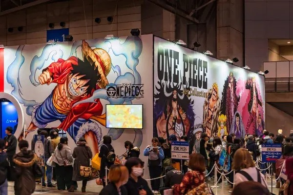
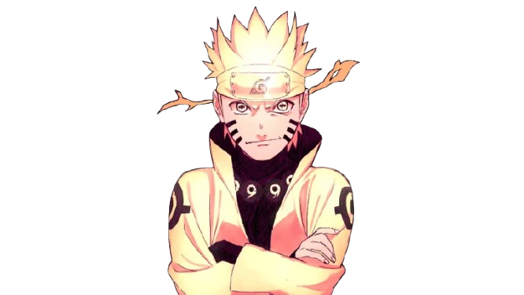
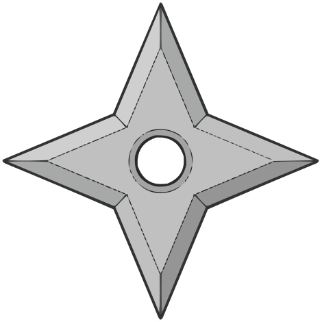
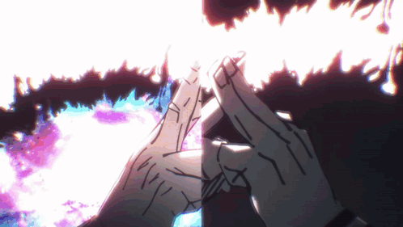
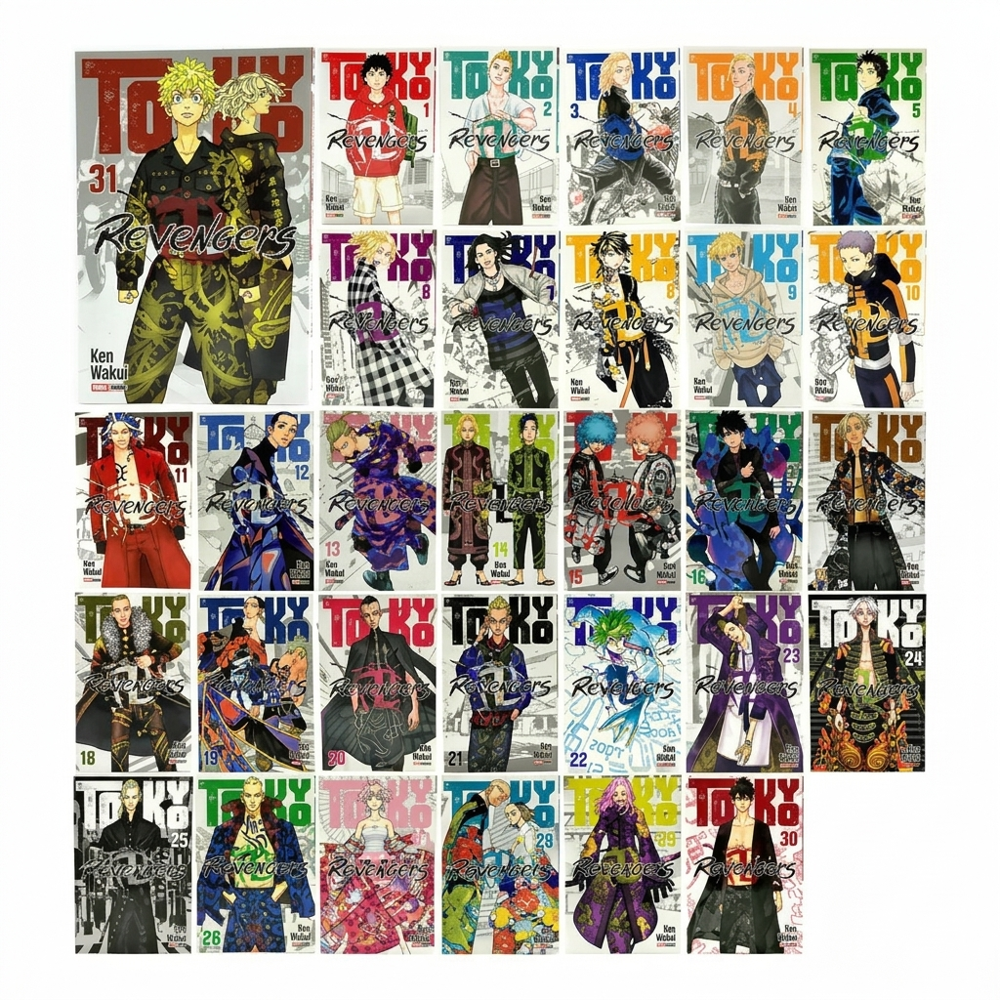
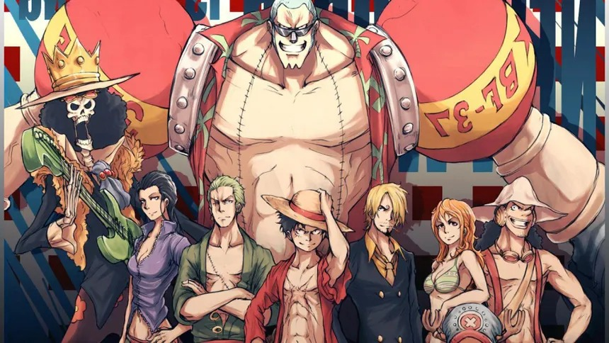
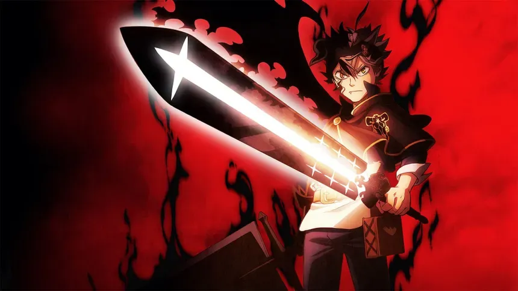
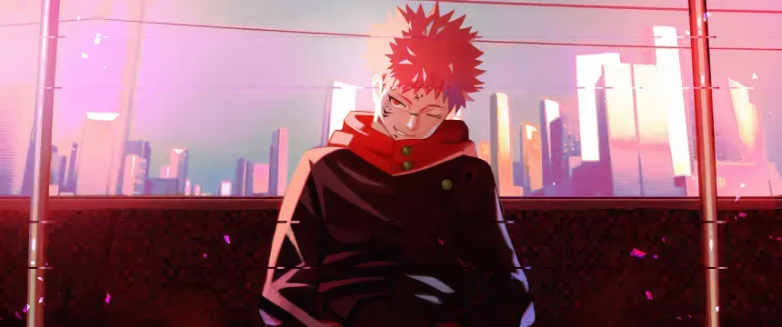
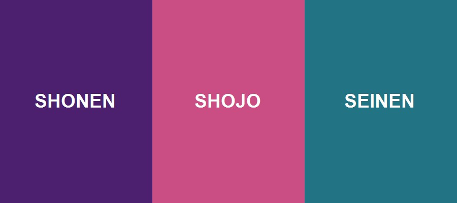

Black Clover Second Season | Official Trailer 3 | Crunchyroll
Si tienes problemas para visualizarlo, abre el vídeo directamente en YouTube.
Universo Anime
Descubre nuestra selección de imágenes representativas en diferentes formatos optimizados.






Fondos de pantalla de One Piece, Black Clover y otros animes para disfrutar del tema del sitio.



Haz clic en las diferentes áreas de la imagen para descubrir más sobre los géneros del manga.

Disfruta del tráiler de Solo Leveling alojado en nuestro propio servidor.
Escucha el opening de Black Clover en formato de audio local.
Si tienes problemas para visualizarlo, abre el vídeo directamente en YouTube.
Ubicación oficial del famoso Studio Pierrot en Mitaka, Tokio.